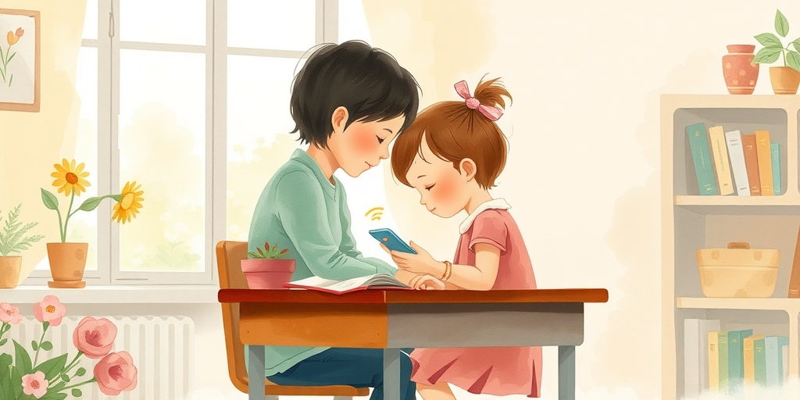
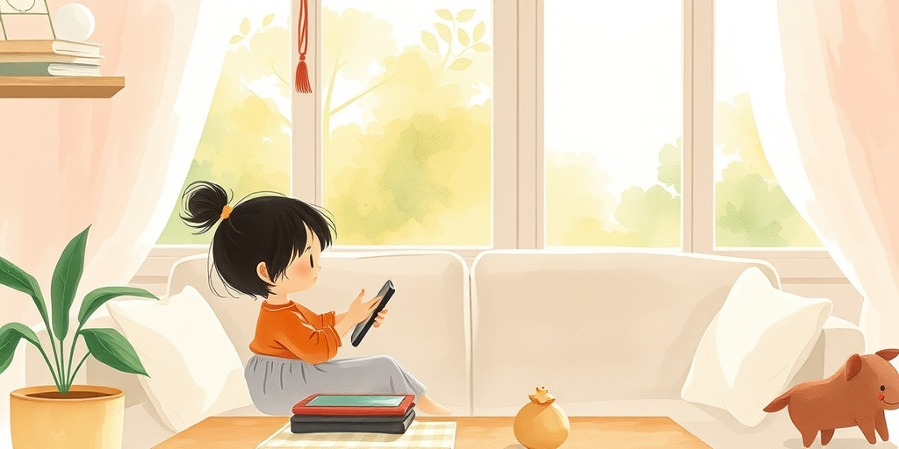
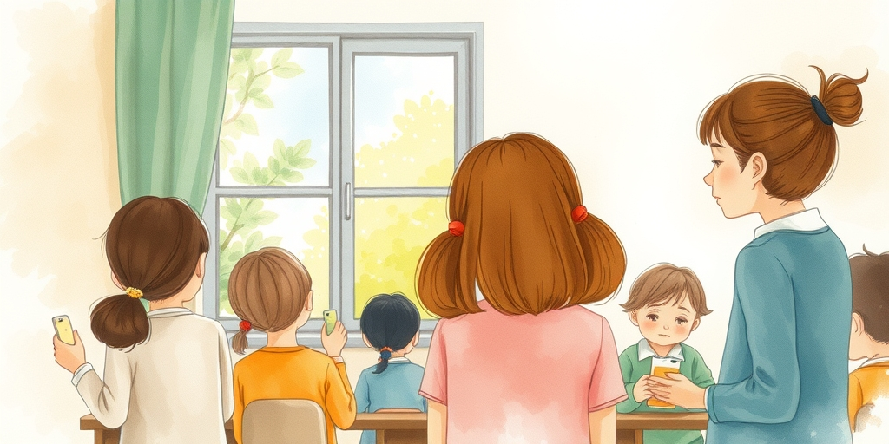
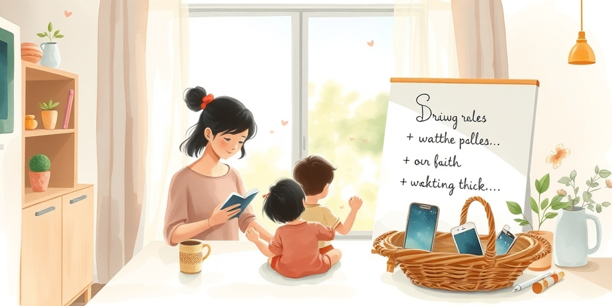

小汪老师的成长洞察 · 属于你的成长专栏
你抱怨孩子上课走神时，有没有想过，那可能是科技公司精心设计的陷阱？内部文件揭露，社交媒体app正通过学校日程，系统性地劫持青少年的注意力。这不是孩子自制力差，而是算法在背后操纵。

最新内部文件显示，社交媒体公司有一套完整的策略。他们在上学时间段推送通知，设计游戏化功能，让孩子忍不住频繁查看手机。这些app知道学生什么时候课间休息，什么时候最容易分心。
学校老师反馈，课堂秩序被严重破坏。学生注意力被碎片化，深度学习变得困难。这不仅是娱乐问题，它正在削弱教育效果。科技巨头的商业目标，直接撞上了孩子的成长需求。

很多家长第一反应是，孩子该学会自律。但真相是，成年人面对精心设计的app都难抵诱惑，何况大脑未发育完全的青少年。你看到的不是一个懒散的孩子，而是一个被算法瞄准的目标。
想想孩子放学后的场景：他们不是选择玩手机，而是被手机选择了。推送的每一条消息，每一个红点，都在利用人性弱点。把问题归咎于孩子，等于忽视了背后强大的设计力量。

学校已经注意到问题。一些老师试图在课堂上禁止手机，但阻力很大。学生总有办法绕过规则，家长有时也不配合。教育者发现，他们的传统方法在数字原生代面前显得笨拙。
更残酷的是，科技公司的资源远超学校。他们雇佣心理学家和设计师，专门优化用户粘性。学校在打一场不对称战争。当孩子的注意力被商品化，教育就成了最大的受害者。

第一步，和孩子一起检视手机使用。不是简单没收，而是打开设置，看看哪些app通知最多。让孩子自己意识到，哪些设计在拉他们上瘾。
第二步，设定家庭无屏幕时间。比如晚餐后一小时，全家人都把手机放在固定盒子。这个动作传递的信号是：我们在一起时，真实世界比虚拟世界更重要。
第三步，做孩子的数字榜样。如果你自己手机不离手，再多规则也苍白。从今天开始，在孩子面前放下手机，拿起一本书。你的行为，比任何说教都有力。
给家长的小提示
你以为控制孩子屏幕时间就够了？真正的防线在日常对话里。多问一句“今天刷到什么有趣内容”，少说一句“别玩手机了”。理解他们的数字世界，才能引导他们穿越它。
最后记住：科技公司不会替你的孩子负责。他们的KPI是用户时长，不是孩子的心理健康。这个责任，只能落在家长肩上。
参考资料
[1] ‘Teachers Are Going to Hate It’: How Social Media Apps Hooked Teens at School (The New York Times) https://www.nytimes.com/2026/06/04/us/social-media-schools.html
小汪老师的成长洞察 · 属于你的成长专栏